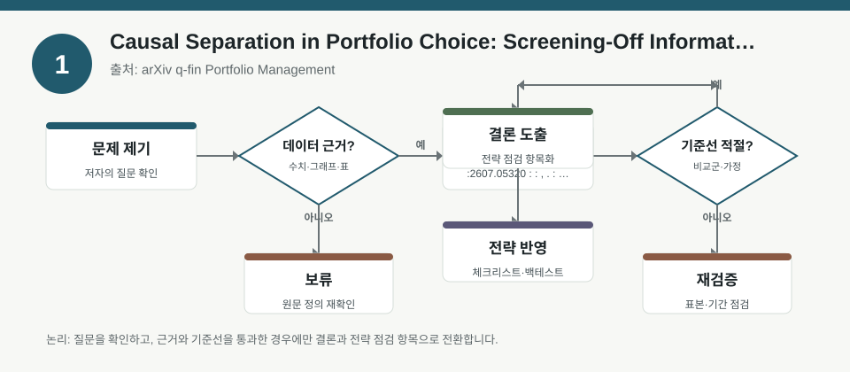
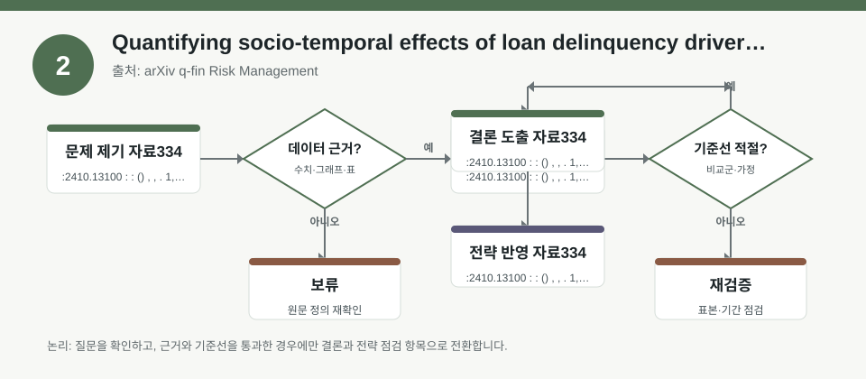
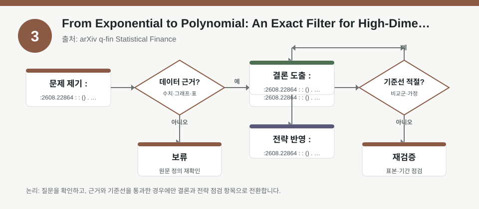

핵심 요약
- 결론: 세 자료 모두 공통적으로 “무엇을 측정하느냐”와 “어떤 가정을 두느냐”가 포트폴리오·리스크 해석을 바꾸므로, KOSPI/KOSDAQ 투자자는 팩터 노출과 거시 민감도 검증을 먼저 점검해야 합니다.
- 원칙: 숫자 성과를 단정하기보다, 표본·모형·조건부 정보·잠재 이질성·추정 안정성 같은 전제를 확인하는 방식으로 읽어야 합니다.
주목할 자료
| 번호 | 자료 | 출처 | 원문 | 핵심 내용 | 데이터 포인트 | 리스크/한계 |
|---|---|---|---|---|---|---|
| 1 | Causal Separation in Portfolio Choice: Screening-Off Information and Conditional Risk | arXiv q-fin Portfolio Management | 원문 보기 | 조건부 포트폴리오 선택에서 어떤 정보를 조건화에 쓰느냐가 리스크 해석을 바꿀 수 있다는 틀을 제시합니다. | 조건부 모멘트, 정보 집합, 인과적 분리, 포트폴리오 구성 규칙 | 초록 기준이므로 구체적 성과 수치와 실증 범위는 본문에서 검증해야 합니다. |
| 2 | Quantifying socio-temporal effects of loan delinquency drivers in microfinance | arXiv q-fin Risk Management | 원문 보기 | 연체 전이 확률을 사회·시간 요인과 잠재 이질성을 함께 고려해 추정하는 위험관리 연구입니다. | 월별 1,716명 표본, 이산시간 logit-link, 고정효과, frailty, 잠재 이질성 | 미시금융 데이터이므로 국내 주식 섹터·업종에 바로 일반화하면 안 되며, 변수 정의와 외삽 가능성을 확인해야 합니다. |
| 3 | From Exponential to Polynomial: An Exact Filter for High-Dimensional MSM Models | arXiv q-fin Statistical Finance | 원문 보기 | 고차원 MSM 변동성 모형의 필터를 대칭성 활용으로 더 효율적으로 계산하는 방법을 제안합니다. | Bayesian filter, MSM 변동성, 고차원 상태공간, 계산 복잡도 축소 | 계산 효율 개선이 곧 예측력 개선을 뜻하지 않으므로, 표본·모형 비교와 안정성 검증이 필요합니다. |
자료별 상세
1. Causal Separation in Portfolio Choice: Screening-Off Information and Conditional Risk

- 핵심: 조건부 위험은 “자산 자체”보다 “어떤 정보로 조건화했는가”에 따라 달라질 수 있다는 점을 강조합니다.
- 데이터 포인트: 팩터 노출을 볼 때도 시장·금리·환율·변동성 정보집합을 분리해 해석하는 틀이 중요합니다.
- 리스크: 초록만으로는 어떤 시장, 어떤 기간, 어떤 백테스트 규칙을 썼는지 확인되지 않습니다.
- 투자전략 반영 예시: KOSPI/KOSDAQ 포지션 점검 시 업종별 금리 민감도와 원/달러 민감도를 별도 체크리스트로 분리해 기록할 수 있습니다.
- 실행 예시: 분기별로 “성장주·수출주·내수주·2차전지·바이오”를 나눠 금리/환율/변동성 스트레스 반응을 표로 점검합니다.
2. Quantifying socio-temporal effects of loan delinquency drivers in microfinance

- 핵심: 연체 전이를 설명할 때 개인 고정효과와 잠재 이질성을 분리해야 사회·시간 요인의 해석이 과대평가되지 않습니다.
- 데이터 포인트: 월별 1,716명 기록을 사용한 이산시간 logit-link 계열 모델은 시계열적 상태 전이 해석에 유용합니다.
- 리스크: 미시금융 연체 요인은 주식시장의 섹터 사이클, 실적 모멘텀, 유동성 충격에 그대로 대응하지 않을 수 있습니다.
- 투자전략 반영 예시: 국내 투자자는 신용경색, 가계부채, 소비 둔화, 규제 변화가 내수주와 금융주에 주는 간접 노출을 별도로 확인할 수 있습니다.
- 실행 예시: 백테스트 전 “신용스프레드 확대 구간”, “금리 인상 구간”, “원화 약세 구간”을 나눠 업종별 승률이 아니라 손실구간 길이를 먼저 비교합니다.
3. From Exponential to Polynomial: An Exact Filter for High-Dimensional MSM Models

- 핵심: 변동성 모형의 고차원 필터를 더 효율적으로 계산하면, 상태추정의 실용성이 커질 수 있습니다.
- 데이터 포인트: MSM 변동성 모델의 Bayesian filter를 대칭성으로 재구성해 계산 복잡도를 낮추는 접근입니다.
- 리스크: 계산이 빨라져도 변동성 군집, 점프, 레짐 전환을 실제로 더 잘 맞추는지는 별도 검증이 필요합니다.
- 투자전략 반영 예시: KOSDAQ처럼 변동성 민감도가 큰 구간에서는 추정 빈도와 리밸런싱 비용을 함께 점검하는 체크가 유용합니다.
- 실행 예시: 동일 표본에서 기존 필터와 제안 필터의 추정 안정성, 거래비용 반영 후 성과, 극단구간 손실 재현성을 나란히 비교합니다.
팩터·리스크·포트폴리오 관점
- 핵심: 세 자료를 합치면, 포트폴리오 해석의 출발점은 팩터 수익률 자체보다 조건부 정보, 잠재 이질성, 변동성 추정의 안정성입니다.
- 핵심: 한국 투자자 관점에서는 업종 배분을 볼 때 성장·가치 같은 단일 팩터보다 금리, 환율, 신용, 규제, 변동성 민감도를 함께 분해해야 합니다.
- 검수: 본문 수치가 없는 이상, 샘플 기간·관측 빈도·변수 정의·백테스트 비용·리밸런싱 규칙은 반드시 원문에서 확인해야 합니다.
정리
- 결론: 이번 자료들은 “무슨 전략이 맞는가”보다 “어떤 가정 아래서 어떤 위험이 보이는가”를 먼저 묻는 데 유용합니다.
- 다음 확인: 원문에서 표본 구간, 성과지표, 거래비용 반영 여부, 조건부 정보 설정, 강건성 검정 결과를 확인해야 합니다.